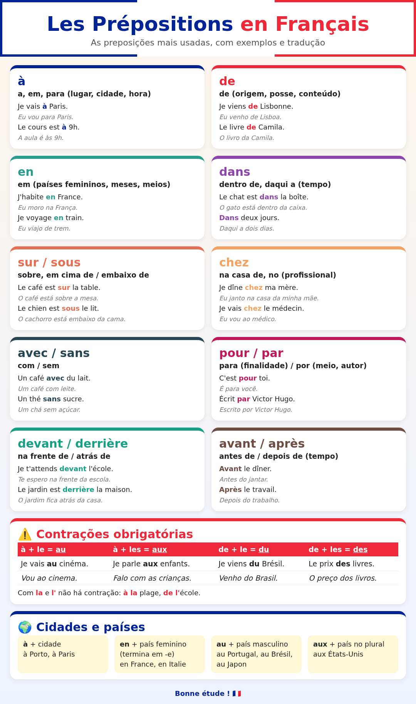

🇫🇷 Aula 06 · Preposições: à, de, en, dans, chez…
Nível 1 · Bloco A · ⏱️ 30 min · ⭐ 10 XP
🎯 Objetivo
- Usar as preposições do dia a dia: à, de, en, dans, sur, sous, chez, avec, sans, pour.
- Fazer as contrações obrigatórias: au, aux, du, des.
- Dizer em que cidade e país você está: à Lisbonne, au Portugal, en France.
🤔 Por que isso importa
Preposições são as "colinhas" da frase. 🧩
Sem elas, não dá para dizer onde, com quem nem para quê.
Boa notícia: muitas funcionam como no português (de = de, avec = com).
E as contrações você já conhece: ao, do, dos. O francês faz igual! 🇧🇷
⏱️ 5 min · Aquecimento
Revise a aula 05 em voz alta:
- Conte de 10 a 20.
- Diga a sua idade: J'ai … ans.
- Pergunte o preço: C'est combien ?
⏱️ 20 min · Conteúdo + prática
🗣️ Leia tudo em voz alta. Sempre.
🖼️ Deixe o infográfico aberto ao lado. Ele é o seu mapa desta aula:

📄 Versão para imprimir (A4, 2 páginas, com mais preposições): infografico_preposicoes_A4.pdf · página 1 (PNG) · página 2 (PNG)


1️⃣ à e de: as duas mais usadas
| Preposição | Sentido | Exemplo | Tradução |
|---|---|---|---|
| à | a, em, para (lugar, hora) | Je vais à Paris. | Vou para Paris. |
| Le cours est à 9 h. | A aula é às 9h. | ||
| de | de (origem, posse) | Je viens de Lisbonne. | Venho de Lisboa. |
| Le livre de Camila. | O livro da Camila. |
🔊 Je vais à Paris. · Le cours est à neuf heures. · Je viens de Lisbonne. · Le livre de Camila.
2️⃣ As contrações obrigatórias ⚠️
Igualzinho a "a + o = ao" e "de + o = do":
| Junta | Vira | Exemplo | Tradução |
|---|---|---|---|
| à + le | au | Je vais au cinéma. | Vou ao cinema. |
| à + les | aux | Je parle aux enfants. | Falo com as crianças. |
| de + le | du | Je viens du Brésil. | Venho do Brasil. |
| de + les | des | Le prix des livres. | O preço dos livros. |
🔊 Je vais au cinéma. · Je parle aux enfants. · Je viens du Brésil. · Le prix des livres.
Com la e l' não há contração:
- à la plage (à praia) · à l'école (à escola) · de la pharmacie · de l'hôtel
🔊 à la plage · à l'école
3️⃣ Cidades e países 🌍
| Regra | Exemplos |
|---|---|
| à + cidade | à Lisbonne, à Porto, à Paris |
| en + país feminino (quase sempre termina em -e) | en France, en Italie, en Espagne |
| au + país masculino | au Portugal, au Brésil, au Japon |
| aux + país no plural | aux États-Unis |
🔊 J'habite à Lisbonne, au Portugal. · Je suis née au Brésil. · Je voyage en France. · Il habite aux États-Unis.
💡 Exceção famosa: le Mexique termina em -e, mas é masculino: au Mexique.
4️⃣ Onde está? 📍
| Preposição | Sentido | Exemplo |
|---|---|---|
| dans | dentro de | Le chat est dans la boîte. (O gato está dentro da caixa.) |
| sur | em cima de | Le café est sur la table. (O café está sobre a mesa.) |
| sous | embaixo de | Le chien est sous le lit. (O cachorro está embaixo da cama.) |
| devant | na frente de | Je t'attends devant l'école. (Te espero na frente da escola.) |
| derrière | atrás de | Le jardin est derrière la maison. (O jardim fica atrás da casa.) |
🔊 dans la boîte · sur la table · sous le lit · devant l'école · derrière la maison
💡 sur × sous: sur tem o som do u biquinho (aula 01!). sous tem o nosso "u".
5️⃣ chez: a preposição "da casa" 🏠
chez + pessoa = na casa de / no consultório de.
- Je dîne chez ma mère. — Janto na casa da minha mãe.
- Je vais chez le médecin. — Vou ao médico.
🔊 Je dîne chez ma mère. · Je vais chez le médecin.
⚠️ Lugar = à (à la pharmacie). Pessoa = chez (chez le pharmacien).
6️⃣ Com, sem, para ☕
| Preposição | Sentido | Exemplo |
|---|---|---|
| avec | com | Un café avec du lait. (Um café com leite.) |
| sans | sem | Un thé sans sucre. (Um chá sem açúcar.) |
| pour | para | C'est pour toi. (É para ti / para você.) |
| en + transporte | de | Je voyage en train. (Viajo de trem.) |
🔊 Un café avec du lait. · Un thé sans sucre. · C'est pour toi. · Je voyage en train.
💡 Na pastelaria: Un galão sans sucre, s'il vous plaît ! 😄
🎧 Tudo em sequência: todos os áudios da aula
✋ Prática
- Ouça e repita os áudios, olhando o infográfico.
- Exercício A · à, au, à la, à l' ou aux?
- Je vais ___ cinéma.
- Elle est ___ plage.
- Nous allons ___ école.
- Il parle ___ enfants.
- J'habite ___ Lisbonne.
- Exercício B · de, du, de la ou des?
- Je viens ___ Brésil.
- C'est le livre ___ Camila.
- Le prix ___ livres.
- Je sors ___ pharmacie.
- Exercício C · en, au ou aux?
- J'habite ___ Portugal.
- Je voyage ___ France.
- Ma sœur habite ___ États-Unis.
- Il est né ___ Japon.
- Exercício D · Traduza:
- O gato está embaixo da mesa.
- Janto na casa da Marie.
- Um café com leite e sem açúcar, por favor.
✅ Gabarito dos exercícios
A. 1. au (à + le) · 2. à la · 3. à l' · 4. aux (à + les) · 5. à (cidade)
B. 1. du (de + le) · 2. de · 3. des (de + les) · 4. de la
C. 1. au · 2. en · 3. aux · 4. au
D.
- Le chat est sous la table.
- Je dîne chez Marie.
- Un café avec du lait et sans sucre, s'il vous plaît.
🖨️ Folha extra (para imprimir)
Quer mais? Há uma folha A4 com 3 blocos de exercícios e gabarito comentado:
- 📝 Exercícios (PDF A4)
- ✅ Gabarito (PDF A4)
- 📦 Tudo junto: infográfico + exercícios + gabarito (PDF A4)
💡 A folha traz algumas preposições que ainda não vimos (depuis, pendant, malgré, parmi, vers, selon…). Elas estão na página 2 do infográfico A4. Faça agora o que der e guarde o resto para a revisão. Sem pressa. 🐢
⏱️ 5 min · Mini-quiz
- à + le = ?
- de + les = ?
- Como dizer "Moro em Portugal"?
- E "Vou para a França"?
- "Na casa da minha mãe" = ?
- sur ou sous: qual é "embaixo de"?
👀 Ver respostas
- au
- des
- J'habite au Portugal.
- Je vais en France.
- chez ma mère
- sous (com o "u" do português).
Acertou tudo? +5 XP 💯
🔗 Para ir mais longe (opcional)
-
🧩 Fontes editáveis (HTML) do material: infográfico original · infográfico A4 · exercícios · gabarito
- WordReference — dicionário francês-português
✅ Concluí
- Faço as contrações au, aux, du, des
- Sei usar à, en, au com cidades e países
- Sei dizer onde algo está (dans, sur, sous, devant, derrière)
- Registrei no progresso
🎉 +10 XP. Conquista: 🧭 Mapa na Mão (ver gamificação)